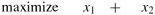
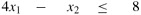
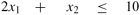
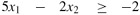
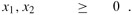

|
|
< Day Day Up > |
|
In order to describe properties of and algorithms for linear programs, it is convenient to have canonical forms in which to express them. We shall use two forms, standard and slack, in this chapter. They will be defined precisely in Section 29.1. Informally, a linear program in standard form is the maximization of a linear function subject to linear inequalities, whereas a linear program in slack form is the maximization of a linear function subject to linear equalities. We shall typically use standard form for expressing linear programs, but it is more convenient to use slack form when we describe the details of the simplex algorithm. For now, we restrict our attention to maximizing a linear function on n variables subject to a set of m linear inequalities.
Let us first consider the following linear program with two variables:
| (29.11) |  |
subject to
| (29.12) |  |
| (29.13) |  |
| (29.14) |  |
| (29.15) |  |
We call any setting of the variables x1 and x2 that satisfies all the constraints (29.12)-(29.15) a feasible solution to the linear program. If we graph the constraints in the (x1, x2)-Cartesian coordinate system, as in Figure 29.2(a), we see that the set of feasible solutions (shaded in the figure) forms a convex region[1] in the two-dimensional space. We call this convex region the feasible region. The function we wish to maximize is called the objective function. Conceptually, we could evaluate the objective function x1 + x2 at each point in the feasible region; we call the value of the objective function at a particular point the objective value. We could then identify a point that has the maximum objective value as an optimal solution. For this example (and for most linear programs), the feasible region contains an infinite number of points, and so we wish to determine an efficient way to find a point that achieves the maximum objective value without explicitly evaluating the objective function at every point in the feasible region.
In two dimensions, we can optimize via a graphical procedure. The set of points for which x1 + x2 = z, for any z, is a line with a slope of -1. If we plot x1 + x2 = 0, we obtain the line with slope -1 through the origin, as in Figure 29.2(b). The intersection of this line and the feasible region is the set of feasible solutions that have an objective value of 0. In this case, that intersection of the line with the feasible region is the point (0, 0). More generally, for any z, the intersection of the line x1 + x2 = z and the feasible region is the set of feasible solutions that have objective value z. Figure 29.2(b) shows the lines x1 + x2 = 0, x1 + x2 = 4, and x1 + x2 = 8. Because the feasible region in Figure 29.2 is bounded, there must be some maximum value z for which the intersection of the line x1 + x2 = z and the feasible region is nonempty. Any point at which this occurs is an optimal solution to the linear program, which in this case is the point x1 = 2 and x2 = 6 with objective value 8. It is no accident that an optimal solution to the linear program occurred at a vertex of the feasible region. The maximum value of z for which the line x1 + x2 = z intersects the feasible region must be on the boundary of the feasible region, and thus the intersection of this line with the boundary of the feasible region is either a vertex or a line segment. If the intersection is a vertex, then there is just one optimal solution, and it is a vertex. If the intersection is a line segment, every point on that line segment must have the same objective value; in particular, both endpoints of the line segment are optimal solutions. Since each endpoint of a line segment is a vertex, there is an optimal solution at a vertex in this case as well.
Although we cannot easily graph linear programs with more than two variables, the same intuition holds. If we have three variables, then each constraint is described by a half-space in three-dimensional space. The intersection of these half-spaces forms the feasible region. The set of points for which the objective function obtains a value z is now a plane. If all coefficients of the objective function are nonnegative, and if the origin is a feasible solution to the linear program, then as we move this plane away from the origin, we find points of increasing objective value. (If the origin is not feasible or if some coefficients in the objective function are negative, the intuitive picture becomes slightly more complicated.) As in two dimensions, because the feasible region is convex, the set of points that achieve the optimal objective value must include a vertex of the feasible region. Similarly, if we have n variables, each constraint defines a half-space in n-dimensional space. The feasible region formed by the intersection of these half-spaces is called a simplex. The objective function is now a hyperplane and, because of convexity, an optimal solution will still occur at a vertex of the simplex.
The simplex algorithm takes as input a linear program and returns an optimal solution. It starts at some vertex of the simplex and performs a sequence of iterations. In each iteration, it moves along an edge of the simplex from a current vertex to a neighboring vertex whose objective value is no smaller than that of the current vertex (and usually is larger.) The simplex algorithm terminates when it reaches a local maximum, which is a vertex from which all neighboring vertices have a smaller objective value. Because the feasible region is convex and the objective function is linear, this local optimum is actually a global optimum. In Section 29.4, we shall use a concept called "duality" to show that the solution returned by the simplex algorithm is indeed optimal.
Although the geometric view gives a good intuitive view of the operations of the simplex algorithm, we shall not explicitly refer to it when developing the details of the simplex algorithm in Section 29.3. Instead, we take an algebraic view. We first write the given linear program in slack form, which is a set of linear equalities. These linear equalities will express some of the variables, called "basic variables," in terms of other variables, called "nonbasic variables." Moving from one vertex to another will be accomplished by making a basic variable become nonbasic and making a nonbasic variable become basic. This operation is called a "pivot" and, viewed algebraically, is nothing more than a rewriting of the linear program in an equivalent slack form.
The two-variable example described above was a particularly simple one. We shall need to address several more details in this chapter. These issues include identifying linear programs that have no solutions, linear programs that have no finite optimal solution, and linear programs for which the origin is not a feasible solution.
[1]An intuitive definition of a convex region is that it fulfills the requirement that for any two points in the region, all points on a line segment between them are also in the region.
|
|
< Day Day Up > |
|